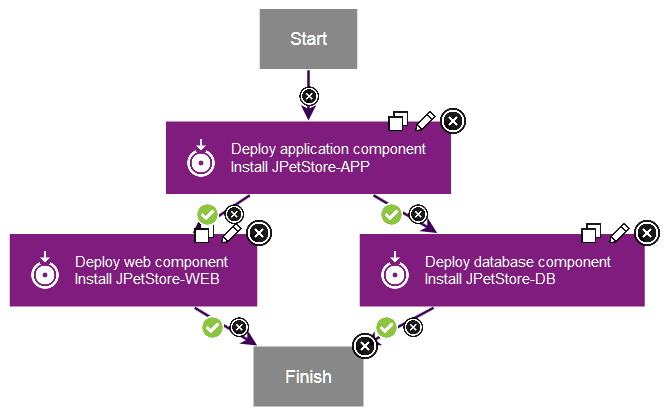

Lesson 4: Creating an application process
Application processes tie together component processes.
In this lesson, you create an application process to install the components by calling each component process.
- Click the Applications tab, and then click the JPetStore application.
- Click Processes, and then click Create Process. Be sure to click the Processes tab within the application and not the Processes tab at the top of the page, which leads to generic processes.
- In the Create an Application Process window, name the new application process Deploy JPetStore.
- Accept the default values for the other fields, and click Save.
- Click the new process to open it in the process editor. The process editor for application processes is similar to the process editor for component processes. However, for application processes, the steps are limited to calling component processes and a few utility steps.
- Add a step to deploy the application component:
- From the list of steps, add an Install Component step to the process editor.This step calls component processes that have a process type of
Deployment. - In the Edit Properties window, name the step Deploy application component.
- In the Component list, select the
JPetStore-APPcomponent. - In the Component Process list, select the
Deploy Application Componentcomponent process. - Click OK.
- From the list of steps, add an Install Component step to the process editor.This step calls component processes that have a process type of
- Similarly, add a step that is named Deploy web component to deploy the web component.
- Similarly, add a step that is named Deploy database component to deploy the database component.
- Verify that the
Startstep is connected to theDeploy application componentstep. - Instead of connecting the remaining steps in a straight line, follow these steps to connect the steps so that they run at the same time.Use the figure at the end of this step as a reference point.
- Connect the
Deploy application componentstep to theDeploy web componentstep. - Connect the
Deploy application componentstep to theDeploy database componentstep. Now these two steps will run at the same time, after the application step. - Connect both the
Deploy web componentstep and theDeploy database componentstep to theFinishstep.
- Connect the
- Save the process.
The complete application process deploys the application component first and then deploys the web component and database components at the same time. The application process looks like the following figure:

Parent topic: Deploying a simple web application